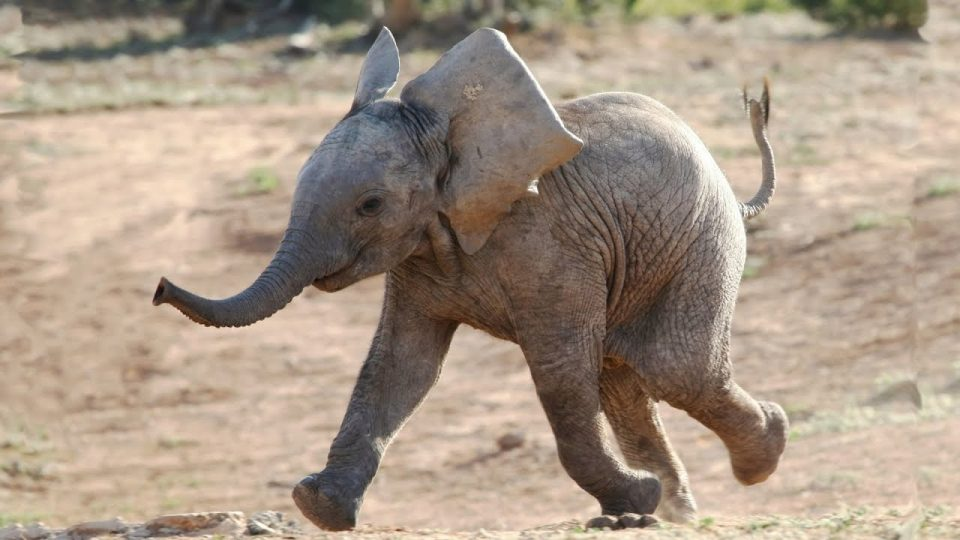

非洲草原象（Loxodonta africana）又名普通非洲象。
體型較大，毛色為灰色，後臀與前肩同高，象牙極長，並向上彎曲。
壽命約為 60～70年，懷孕期約為22 個月，草食性動物。
非洲象是象科的一個屬，於1825年由喬治·庫維葉男爵命名。
雄性象(成年)約為6,000 公斤、3.2 公尺
雌性象(成年)約為3,000 公斤、2.2 公尺
它們的長牙最高記錄有102.7公斤重。非洲象的化石僅在非洲有發現。
數量
大約有47萬非洲象群徘徊在野外37個非洲國家中。非洲大象有兩個截然不同的亞種-稀樹草原大象和較小的森林大象。據估計，大草原（或叢林）大象佔非洲大象總數的25-35％。由於環境的喪失和偷獵國際象牙貿易以及肉類，這兩個亞種都在迅速減少。
主要威脅
由於偷獵活動的增加，整個非洲大陸的大象分佈變得越來越分散。大多數集中在中非和西非，亞洲是非法象牙的主要目的地。
傳統上，象牙和肉類的盜獵是該物種下降的主要原因。
其他介紹
非洲象是陸地上最大的哺乳動物。
牠們的適應能力非常好，可以在非洲多處看到牠們的身影。
大象的鼻子可以用作鼻子、手、腳、信號裝置、收集食物、水、塵和挖掘的工具等等。
大象的大腦是所有陸地哺乳動物中最大的，體重超過5kg。它的結構與人腦相似。
觀察表明，大象能夠使用鏡子識別自己。自我認知表明認知水平很高，僅限於少數物種。
鬣狗和獅子對小象構成威脅，在某些地區，獅子甚至會殺死成年大象。
脆弱，面臨在野外滅絕的風險。
目前在許多地區，大象被盜獵的速度比其繁殖速度快。雌象在妊娠22個月後只生產一隻小象時，雄象需要年滿20歲，才能成功競爭交配。
當一個年長的雄性想要和一個年幼的雄性爭吵時，他們常常會跪下來，這是大象同情心的一個例子。大象似乎也表現出悲傷，同情心，自我意識，利他主義和遊戲性。
當大象的小象不被餵食時，牠可能會吮吸軀幹以獲得舒適感，就像人類的嬰兒會吮吸拇指一樣。如果一頭小象感到不安，整個家庭都會大聲疾呼，去撫摸和撫摸它。
大象晝夜不停地進食，最多可消耗其體重的5％。
